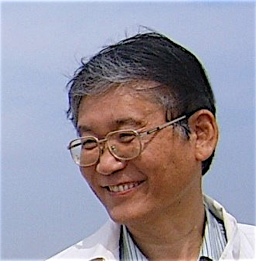

Jai-Hyung
Lee
FEST

 General Information
Prof.
Jai-Hyung Lee, who has lead the optics group at Seoul National
University in the last 30 years, is retiring at the end of August,
2010. After many discussions on how the event should be celebrated, a
consensus has been reached to have an academic conference (workshop).
An organization committee has been formed with Prof. Chang-Ho Cho as
committee chair, and there was the first committee meeting on May 7,
2010 at Seoul National University. Here we announce the Jai-Hyung Lee
FEST to the graduates from the SNU optics group as an event for them to
get together and celebrate Prof. Lee's long dedication on education and
research.
Venue and Date
SNU Faculty Club, July
9 (Friday), 2010.
Registration
If you want to participate the event, please make a
preregistration by using a registration
page by June 18, 2010.
Scientific Program
Final
program
is
announced
here.
Click
here to download
the book of abstracts.
Social Program
The banquet of this conference will be an event to
celebrate Prof. Lee's retirement. There will be music performances by
the present graduate students and a time for sharing attendants'
memorable stories with Prof. Lee. We plan to have a slide show of old
photos taken with Prof. Lee. If you have one to share, please make it
in jpeg format and send it to jhlfest(at)snu.ac.kr. We will include
your photos in the slide show. We also have SNU
campus
tour and the optics group
latoratory tour. If you and your family want to participate these
tours, please indicate your intention via the registration
page.
Accomodation
If
you
need
accommodation,
we
will make a reservation for you at Hoam Faculty House. Please indicate your need via the registration
page.
Contact Information
If you have
other inquiries, please contact Juhee Yang [jhlfest(at)gmail.com]. We
hope to see you all at Jai-Hyung Lee FEST.
|